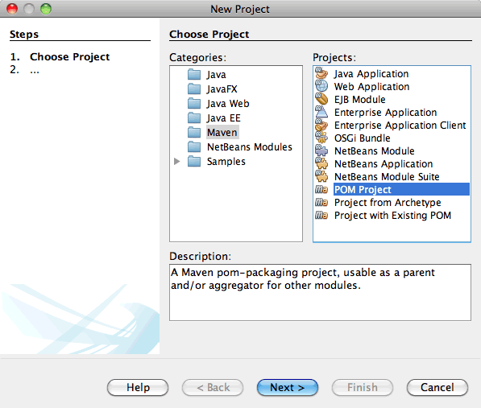
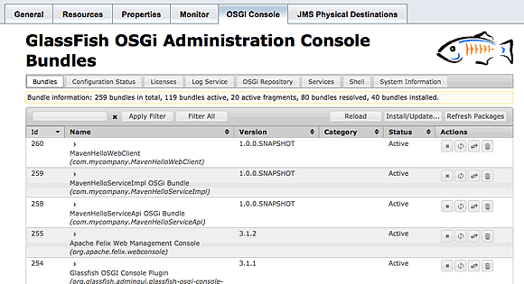

Apache NetBeans
Apache NetBeansLatest release
Using CDI to Inject OSGi Bundles as Services in IDE NetBeans
| This tutorial needs a review. You can edit it in GitHub following these contribution guidelines. |
This document demonstrates how the integrated support for the Open Services Gateway Initiative (OSGi) framework in IDE NetBeans simplifies the process of creating OSGi bundles and using the bundles in your projects. В этом учебном курсе будут созданы два простых пакета OSGi из архетипа пакета OSGi Maven, затем они будут развернуты на сервере GlassFish Server Open Source Edition 3.1.
После создания основных пакетов OSGi будет создано клиентское веб-приложение, а CDI использован для внедрения пакетов как служб. Затем веб-приложение будет развёрнуто как пакет на сервере. Далее в этом учебном курсе показано использование консоли администрирования OSGi для работы с пакетами OSGi.
Применение пакета OSGi в приложении уровня предприятия позволяет увеличить модульность и гибкость по отношению к обновлению отдельных пакетов. Встроенная поддержка OSGi в сервере GlassFish делает внедрение пакетов в приложение очень простым.
Этот учебный курс основан на записи в блоге + TOTD #154: Dynamic OSGi services in GlassFish 3.1 - Using CDI and @OSGiService ] и других записях, которые можно найти в link:http://blog.arungupta.me/[+блоге Аруна Гупты. Блог также содержит много других интересных записей о работе с OSGi.
Кроме того, следующие ресурсы содержат массу информации об использовании OSGi и CDI в гибридных приложениях.
Упражнения по темам руководства
Для работы с этим учебным курсом требуется следующее программное обеспечение и ресурсы.
| Программное обеспечение или материал | Требуемая версия |
|---|---|
Версия 7.2, 7.3, 7.4, 8.0, Java EE |
|
версия 7 или 8 |
|
GlassFish Server Open Source Edition 3.1.2.2 |
3.1.x или 4.x |
Предпосылки
Предполагается, что читатель обладает базовыми знаниями по следующим технологиям или опытом программирования с их использованием:
-
Программирование на Java
-
IDE NetBeans
-
Платформа Maven
Перед изучением этого учебного курса можно ознакомиться со следующей документацией:
Создание родительского проекта POM
В этом разделе создается родительский проект POM для пакетов OSGi, которые создаются в данном учебном курсе. Файл POM проекта ( pom.xml ) изменяется для добавления элементов управления зависимостями, которые будут наследоваться дочерними проектами как зависимости.
-
Выберите 'Создать проект' (Ctrl-Shift-N; ⌘-Shift-N в Mac) в главном меню.
-
Выберите в категории "Maven" проект POM.

Figure 1. Архетип проекта Maven POM в мастере создания проектов
-
Введите MavenOSGiCDIProject в поле имени проекта. Нажмите кнопку "Завершить".
После нажатия кнопки "Готово" среда IDE создает проект POM и открывает проект в окне "Проекты".
-
Разверните узел "Файлы проекта" в окне проектов и дважды щелкните файл
pom.xml, чтобы открыть файл в редакторе.
Базовый файл POM для проекта должен быть аналогичен следующему.
<?xml version="1.0" encoding="UTF-8"?>
<project xmlns="http://maven.apache.org/POM/4.0.0" xmlns:xsi="http://www.w3.org/2001/XMLSchema-instance" xsi:schemaLocation="http://maven.apache.org/POM/4.0.0 http://maven.apache.org/xsd/maven-4.0.0.xsd">
<modelVersion>4.0.0</modelVersion>
<groupId>com.mycompany</groupId>
<artifactId>MavenOSGiCDIProject</artifactId>
<version>1.0-SNAPSHOT</version>
<packaging>pom</packaging>
<properties>
<project.build.sourceEncoding>UTF-8</project.build.sourceEncoding>
</properties>
</project>-
Измените родительский файл
pom.xml, добавив следующие элементы. Сохраните изменения.
<?xml version="1.0" encoding="UTF-8"?>
<project xmlns="http://maven.apache.org/POM/4.0.0" xmlns:xsi="http://www.w3.org/2001/XMLSchema-instance" xsi:schemaLocation="http://maven.apache.org/POM/4.0.0 http://maven.apache.org/xsd/maven-4.0.0.xsd">
<modelVersion>4.0.0</modelVersion>
<groupId>com.mycompany</groupId>
<artifactId>MavenOSGiCDIProject</artifactId>
<version>1.0-SNAPSHOT</version>
<packaging>pom</packaging>
<properties>
<project.build.sourceEncoding>UTF-8</project.build.sourceEncoding>
</properties>
*<dependencyManagement>
<dependencies>
<dependency>
<groupId>org.osgi</groupId>
<artifactId>org.osgi.core</artifactId>
<version>4.2.0</version>
<scope>provided</scope>
</dependency>
</dependencies>
</dependencyManagement>*
</project>В этом упражнении был явно указан артефакт, используемый в этом проекте, и его версия. Используя управление зависимостями и указывая артефакты в родительском файле POM, можно сделать файлы POM в дочерних проектах проще и обеспечить соответствие версий зависимостей в проекте.
Дополнительные сведения об использовании управления зависимостями приведены в документе + Введении в механизм зависимостей+.
Создание пакетных проектов OSGi
Категория Maven в мастере создания проекта содержит архетип пакета OSGi для создания проектов пакетов OSGi. При создании проекта пакета OSGi в создаваемом файле POM архив JAR org.osgi.core объявляется зависимостью, и для сборки проекта выбирается подключаемый модуль maven-bundle-plugin .
Создание пакета интерфейса MavenHelloServiceApi
В этом упражнении используется мастер создания проекта для создания пакетного проекта OSGi, который даст простой интерфейс, реализуемый другими пакетами. После создания пакета и интерфейса файл POM исправляется для обновления зависимости от артефакта org.osgi.core , указанного в родительском проекте файла POM.
-
Выберите в меню "Файл" пункт "Новый проект", чтобы открыть мастер создания проекта.
-
Выберите пакет OSGi из категории Maven. Нажмите кнопку "Далее".

Figure 2. Архетип набора Maven OSGi в мастере создания проектов
-
Введите в поле имени проекта MavenHelloServiceApi.
-
Нажмите кнопку "Обзор" и выберите в качестве расположения проект POM MavenOSGiCDIProject. Нажмите кнопку "Завершить".
После нажатия кнопки "Готово" среда IDE создает проект и открывает его в окне проектов. Если открыть pom.xml для проекта MavenHelloServiceApi в редакторе, то вы увидите, что элемент packaging определяет bundle , и что maven-bundle-plugin будет использоваться при сборке пакета.
<project>
<modelVersion>4.0.0</modelVersion>
<parent>
<artifactId>MavenOSGiCDIProject</artifactId>
<groupId>com.mycompany</groupId>
<version>1.0-SNAPSHOT</version>
</parent>
<groupId>com.mycompany</groupId>
<artifactId>MavenHelloServiceApi</artifactId>
<version>1.0-SNAPSHOT</version>
*<packaging>bundle</packaging>*
<name>MavenHelloServiceApi OSGi Bundle</name>
<properties>
<project.build.sourceEncoding>UTF-8</project.build.sourceEncoding>
</properties>
<dependencies>
<dependency>
<groupId>org.osgi</groupId>
<artifactId>org.osgi.core</artifactId>
<version>4.3.0</version>
<scope>provided</scope>
</dependency>
</dependencies>
<build>
<plugins>
<plugin>
<groupId>org.apache.felix</groupId>
*<artifactId>maven-bundle-plugin</artifactId>*
<version>2.3.7</version>
<extensions>true</extensions>
<configuration>
<instructions>
<Bundle-Activator>com.mycompany.mavenhelloserviceimpl.Activator</Bundle-Activator>
<Export-Package />
</instructions>
</configuration>
</plugin>
...
</plugins>
</build>
...
<project>Также можно увидеть, что при создании проекта пакета OSGi с использованием архетипа пакета Maven OSGi среда IDE добавляет артефакт org.osgi.core в качестве зависимости по умолчанию.
-
Щелкните правой кнопкой мыши узел проекта MavenHelloServiceApi в окне проектов и выберите пункт "Свойства".
-
Выберите в диалоговом окне "Свойства проекта" категорию "Исходные файлы".
-
Укажите для параметра Формат исходных/двоичных файлов значение 1.6 и подтвердите, что кодировка — UTF-8. Нажмите кнопку "ОК".
-
Щелкните правой кнопкой мыши узел "Исходные пакеты" в окне проектов и выберите пункт "Создать" > "Интерфейс Java".
-
Введите в поле "Имя класса Hello.
-
Выберите пакет com.mycompany.mavenhelloserviceapi. Нажмите кнопку "Завершить".
-
Добавьте следующий метод
sayHelloк интерфейсу (выделено жирным) и сохраните изменения.
public interface Hello {
*String sayHello(String name);*
}-
Щелкните правой кнопкой мыши узел проекта в окне проектов и выберите "Сборка".
После сборки проекта, если открыть окно "Файлы" и развернуть узел проекта, вы увидите, что файл MavenHelloServiceApi-1.0-SNAPSHOT.jar создан в папке target .

Figure 3. просмотреть содержимое скомпилированного файла JAR в окне 'Файлы'
Подключаемый модуль maven-bundle-plugin обрабатывает создание файла MANIFEST.MF при сборке проекта. Если открыть файл MANIFEST.MF в скомпилированном файле JAR, можно увидеть, что модуль создал заголовок манифеста, который объявляет экспортные пакеты. Для OSGi все пакеты, которые нужно предоставить и сделать доступными для других пакетов, должны быть перечислены в элементе Export-Package в файле MANIFEST.MF .
-
Убедитесь, что файл
MANIFEST.MFсодержит элементExport-Package(в приведенном ниже примере этот элемент выделен жирным шрифтом).
Manifest-Version: 1.0
Bnd-LastModified: 1395049732676
Build-Jdk: 1.7.0_45
Built-By: nb
Bundle-Activator: com.mycompany.mavenhelloserviceapi.Activator
Bundle-ManifestVersion: 2
Bundle-Name: MavenHelloServiceApi OSGi Bundle
Bundle-SymbolicName: com.mycompany.MavenHelloServiceApi
Bundle-Version: 1.0.0.SNAPSHOT
Created-By: Apache Maven Bundle Plugin
*Export-Package: com.mycompany.mavenhelloserviceapi;uses:="org.osgi.frame
work";version="1.0.0.SNAPSHOT"*
Import-Package: org.osgi.framework;version="[1.6,2)"
Tool: Bnd-1.50.0Контейнер OSGi считывает заголовок манифеста Export-Package для определения доступных извне классов пакета. Например, в этом примере предоставляются классы пакета com.mycompany.mavenhelloserviceapi .
Если в файле MANIFEST.MF отсутствует элемент Export-Package , необходимо разрешить поведение по умолчанию для подключаемого модуля в окне 'Свойства проекта' и выполнить построение проекта повторно. В диалоговом окне 'Свойства проекта' выберите категорию 'Экспорт пакетов', затем выберите параметр Поведение подключаемого модуля maven-bundle-plugin по умолчанию. На панели 'Экспорт пакетов' в окне 'Свойства проекта' можно явно указать предоставляемые пакеты. Также можно указать пакеты непосредственно в файле pom.xml .
|
Создание пакета реализации MavenHelloServiceImpl
В этом упражнении будет создан MavenHelloServiceImpl в проекте POM.
-
Выберите в меню "Файл" пункт "Новый проект", чтобы открыть мастер создания проекта.
-
Выберите пакет OSGi из категории Maven. Нажмите кнопку "Далее".
-
Введите строку MavenHelloServiceImpl в качестве имени проекта.
-
Нажмите кнопку "Обзор" и выберите в качестве расположения проект POM MavenOSGiCDIProject (если оно еще не выбрано). Нажмите кнопку "Завершить".
-
Щелкните правой кнопкой мыши узел проекта в окне "Проекты" и выберите команду "Свойства".
-
Выберите в диалоговом окне "Свойства проекта" категорию "Исходные файлы".
-
Укажите для параметра Формат исходных/двоичных файлов значение 1.6 и подтвердите, что кодировка — UTF-8. Нажмите кнопку "ОК".
-
Щелкните правой кнопкой мыши узел "Исходные пакеты" в окне "Проекты" и выберите пункт "Создать" > "Класс Java".
-
Введите значение HelloImpl в поле имени класса.
-
Выберите пункт com.mycompany.mavenhelloserviceimpl в поле "Пакет". Нажмите кнопку "Завершить".
-
Введите следующее (жирным шрифтом) и сохраните изменения.
public class HelloImpl *implements Hello {
public String sayHello(String name) {
return "Hello " + name;*
}
}При внедрении Hello среда IDE отобразит ошибку, которую необходимо разрешить добавлением проекта MavenHelloServiceApi в качестве зависимости.
-
Щелкните правой кнопкой мыши узел "Зависимости" в MavenHelloServiceImpl в окне проектов и выберите пункт "Добавить зависимость".
-
Щелкните вкладку "Открытые проекты" в диалоговом окне "Добавить библиотеку".
-
Выберите пакет OSGi MavenHelloServiceApi. Нажмите кнопку "Add".

Figure 4. Откройте вкладку "Проекты" в диалоговом окне "Добавить библиотеку".
-
Щелкните правой кнопкой мыши класс
HelloImpl.java, открытый в редакторе и выберите 'Исправить выражения импорта' (Alt-Shift-I; ⌘-Shift-I в Mac), чтобы добавить оператор импорта дляcom.mycompany.mavenhelloserviceapi.Hello. Сохраните изменения. -
Разверните пакет
com.mycompany.mavenhelloserviceimplи дважды щелкнитеActivator.javaдля открытия файла в редакторе.

Figure 5. Класс 'Активатор' в окне 'Проекты'.
Среда IDE автоматически создала класс активатора пакета Activator.java в вашем проекте. Активатор пакета используется для управления жизненным циклом пакета. Класс активатора пакета объявляется в файле MANIFEST.MF пакета и создается при запуске пакета контейнером.
Класс активатора не является обязательным для пакета OSGi, но метод start() в классе активатора можно использовать, например, для инициализации служб или других нужных пакету ресурсов. В этом упражнении будут добавлены несколько строк кода в класс, который будет выводить сообщения в "Окно вывода". Это позволит определить, когда пакет запускается и останавливается.
-
Измените методы
start()иstop()в классе активатора пакета, чтобы добавить следующие строки (выделено жирным).
public class Activator implements BundleActivator {
public void start(BundleContext context) throws Exception {
*System.out.println("HelloActivator::start");
context.registerService(Hello.class.getName(), new HelloImpl(), null);
System.out.println("HelloActivator::registration of Hello service successful");*
}
public void stop(BundleContext context) throws Exception {
*context.ungetService(context.getServiceReference(Hello.class.getName()));
System.out.println("HelloActivator stopped");*
}
}Класс активатора пакета импортирует org.osgi.framework.BundleActivator и org.osgi.framework.BundleContext . По умолчанию создаваемый класс содержит два метода: start() и stop() . Платформа OSGi вызывает методы start() и stop() для включения и отключения функциональных возможностей пакета. При запуске пакета, компонент службы пакета регистрируется в реестре служб OSGi. После регистрации пакета, остальные пакеты могут найти в реестре и использовать через контекст пакета активные службы.
Если посмотреть на файл POM для проекта, то можно увидеть элемент <Bundle-Activator> , который указывает активатор пакета в элементе настройки для maven-bundle-plugin .
<plugin>
<groupId>org.apache.felix</groupId>
<artifactId>maven-bundle-plugin</artifactId>
<version>2.3.7</version>
<extensions>true</extensions>
<configuration>
<instructions>
*<Bundle-Activator>com.mycompany.mavenhelloserviceimpl.Activator</Bundle-Activator>*
</instructions>
</configuration>
</plugin>При сборке пакета подключаемый модуль создает заголовок манифеста в файле манифеста проекта в файле JAR и указывает класс активатора пакета. При развертывании пакета среда выполнения OSGi ищет в файле манифеста заголовок Bundle-Activator .
-
Исправьте операторы импорта в
Activator.javaдля импортаcom.mycompany.mavenhelloserviceapi.Hello. Сохраните изменения. -
Разверните узел "Зависимости" и убедитесь, что артефакт
org.osgi.coreдобавлен в список зависимостей.
Удалите все предыдущие версии артефакта в узле 'Зависимости'. Для этого щелкните артефакт правой кнопкой мыши и выберите 'Удалить зависимость'. Узел "Зависимости" должен содержать только проект MavenHelloServiceApi и артефакт org.osgi.core .
|

Figure 6. Класс 'Активатор' в окне 'Проекты'.
Сборка и развертывание пакетов OSGi
В этом упражнении пакеты OSGi будут собраны и развернуты на сервере GlassFish.
-
Щелкните правой кнопкой мыши узел MavenOSGiCDIProject в окне "Проекты" и выберите пункт "Очистить и собрать".
При сборке проекта среда IDE создает файлы JAR в папке target каждого из проектов, а также устанавливает снимок JAR в локальный репозиторий. В окне "Файлы" можно развернуть папку target для каждого из двух проектов пакетов чтобы увидеть два архива JAR ( MavenHelloServiceApi-1.0-SNAPSHOT.jar и MavenHelloServiceImpl-1.0-SNAPSHOT.jar ).
-
Запустите сервер GlassFish, если он еще не запущен.
-
Скопируйте
MavenHelloServiceApi-1.0-SNAPSHOT.jarв каталогglassfish/domains/domain1/autodeploy/bundles/вашей установки GlassFish.
Вы должны увидеть выходные данные, похожие на следующие данные журнала сервера GlassFish, в окне выходных данных.
INFO: Started bundle: file:/glassfish-4.0/glassfish/domains/domain1/autodeploy/bundles/MavenHelloServiceApi-1.0-SNAPSHOT.jarЩелкните правой кнопкой мыши узел сервера GlassFish в окне "Службы" и выберите пункт "Просмотреть журнал сервера домена", если журнал сервера не виден в окне вывода.
-
Повторите действия по копированию файла
MavenHelloServiceImpl-1.0-SNAPSHOT.jarв каталогautodeploy/bundles.
Теперь в журнале сервера GlassFish вы должны видеть примерно следующий результат.
INFO: HelloActivator::start
INFO: HelloActivator::registration of Hello service successful
INFO: Started bundle: file:/glassfish-4.0/glassfish/domains/domain1/autodeploy/bundles/MavenHelloServiceImpl-1.0-SNAPSHOT.jar
INFO: Started bundle: file:/glassfish-4.0/glassfish/domains/domain1/autodeploy/bundles/MavenHelloServiceImpl-1.0-SNAPSHOT.jarВ качестве альтернативы можно установить пакеты из консоли администрирования GlassFish OSGi. Дополнительные сведения приведены в разделе Установка и использование консоли администрирования OSGi.
Создание клиентского веб-приложения
В этом разделе показано создание веб-клиента Java EE, использующего службу пакета OSGi. Создается простой сервлет в веб-приложении, а затем внедряются объявленные службы. Перед созданием проекта в родительский проект POM добавляются некоторые элементы управления зависимостями.
Настройка зависимостей в родительском проекте POM
В этом упражнении указываются элементы зависимости в родительском проекте POM. Кроме того, добавляется репозиторий для артефактов, который будет использоваться в проекте.
-
Разверните узел "Файлы проекта" в проекте MavenOSGiCDIProject в окне проектов и дважды щелкните файл
pom.xml, чтобы открыть файл в редакторе. -
Измените родительский файл
pom.xml, добавив следующие элементы управления зависимостями (выделены жирным шрифтом). Сохраните изменения.
<?xml version="1.0" encoding="UTF-8"?>
<project xmlns="http://maven.apache.org/POM/4.0.0" xmlns:xsi="http://www.w3.org/2001/XMLSchema-instance" xsi:schemaLocation="http://maven.apache.org/POM/4.0.0 http://maven.apache.org/xsd/maven-4.0.0.xsd">
<modelVersion>4.0.0</modelVersion>
<groupId>com.mycompany</groupId>
<artifactId>MavenOSGiCDIProject</artifactId>
<version>1.0-SNAPSHOT</version>
<packaging>pom</packaging>
<properties>
<project.build.sourceEncoding>UTF-8</project.build.sourceEncoding>
</properties>
...
<dependencyManagement>
<dependencies>
<dependency>
<groupId>org.osgi</groupId>
<artifactId>org.osgi.core</artifactId>
<version>4.3.0</version>
<scope>provided</scope>
</dependency>
*<dependency>
<groupId>org.osgi</groupId>
<artifactId>org.osgi.compendium</artifactId>
<version>4.2.0</version>
<scope>provided</scope>
</dependency>
<dependency>
<groupId>org.glassfish</groupId>
<artifactId>osgi-cdi-api</artifactId>
<version>3.1-b41</version>
<type>jar</type>
<scope>provided</scope>
</dependency>*
</dependencies>
</dependencyManagement>
...
</project>-
Добавьте следующие элементы, чтобы добавить к POM репозиторий GlassFish. Сохраните изменения.
<project>
...
</dependencyManagement>
*<repositories>
<!-- glassfish nexus repo for glassfish dependencies -->
<repository>
<id>glassfish-repo-archive</id>
<name>Nexus repository collection for Glassfish</name>
<url>http://maven.glassfish.org/content/groups/glassfish</url>
<snapshots>
<updatePolicy>never</updatePolicy>
</snapshots>
</repository>
</repositories>*
<modules>
<module>MavenHelloServiceApi</module>
<module>MavenHelloServiceImpl</module>
</modules>
</project>После добавления репозитория GlassFish в POM при просмотре списка репозиториев в узле 'Репозитории Maven' в окне 'Службы' вы увидите, что среда IDE автоматически добавила узел для репозитория GlassFish. По умолчанию среда IDE отображает узел для локального репозитория Maven. Когда в открытом проекте указан репозиторий, среда IDE автоматически добавляет узел репозитория под узлом 'Репозитории Maven'.

Figure 7. Репозиторий GlassFish в окне 'Репозиториии Maven'
В этом упражнении добавлены дополнительные артефакты и версии артефактов, которые будут использоваться в проекте. Кроме того, добавлен репозиторий GlassFish, содержащий артефакты osgi-cdi-api .
Создание веб-приложения MavenHelloWebClient
Сначала создайте обычное веб-приложение, затем преобразуйте проект в комплект OSGi (комплект веб-приложения (WAB)).
-
В главном меню выберите "Файл" > "Новый проект".
-
Выберите в категории Maven пункт "Веб-приложение". Нажмите кнопку "Далее".
-
Введите MavenHelloWebClient в поле имени проекта.
-
Нажмите кнопку "Обзор" и выберите проект POM MavenOSGiCDIProject в качестве местоположения (если он еще не выбран). Нажмите кнопку "Далее".
-
В качестве сервера выберите сервер GlassFish, а в качестве версии Java EE укажите Java EE 6 Web или Java EE 7 Web. Нажмите кнопку "Завершить".
-
Щелкните правой кнопкой мыши узел проекта и выберите в меню "Создать" пункт "Сервлет".
-
Введите HelloServlet в поле имени класса.
-
В списке 'Пакет' выберите
com.mycompany.mavenhellowebclient. Нажмите кнопку "Завершить". -
Удалите созданные средой IDE методы по умолчанию (
processRequest,doGet,doPost,getServletInfo).
| Потребуется расширить свертывание редактора для удаления методов HttpServlet. |
-
Для внедрения службы введите следующий код (выделен жирным).
@WebServlet(name = "HelloServlet", urlPatterns = {"/HelloServlet"})
public class HelloServlet extends HttpServlet {
*@Inject
@OSGiService(dynamic=true)
Hello hello;*
}-
Добавьте следующий метод
doGet.
@Override
protected void doGet(HttpServletRequest request, HttpServletResponse response)
throws ServletException, IOException {
PrintWriter out = response.getWriter();
out.println(hello.sayHello("Duke"));
}-
Щелкните узел проекта правой кнопкой мыши и выберите команду "Создать" > "Другие".
-
Выберите beans.xml в категории "Подключение контекстов и зависимостей". Нажмите кнопку "Далее".
-
Используйте имя файла по умолчанию (
beans). Нажмите кнопку "Завершить".
При нажатии кнопки "Готово" мастер создает в веб-приложении файл beans.xml . Среда CDI автоматически включена, если beans.xml является частью приложения.
-
В файле
beans.xmlизмените значение параметраbean-discovery-modeнаall.
bean-discovery-mode="*all*"Сохраните изменения и закройте файл.
Подробные сведения о различиях между значениями параметра bean-discovery-mode см. на следующих страницах:
-
25.1 Упаковка приложений CDI в учебном курсе по Java EE 7
-
-
Щелкните правой кнопкой мыши узел "Зависимости" в MavenHelloWebClient в окне проектов и выберите пункт "Добавить зависимость".
-
Выберите "Предоставленный" в качестве области действия.
-
Щелкните в диалоговом окне добавления библиотеки вкладку "Открытые проекты" и выберите *пакет MavenHelloServiceApi OSGi *. Нажмите кнопку "Add".
-
Снова щелкните правой кнопкой мыши узел "Зависимости" и выберите пункт "Добавить зависимость".
-
Щелкните вкладку "Управление зависимостями" в диалоговом окне "Добавить библиотеку" и выберите артефакт
osgi-cdi-api, указанный в родительском проекте POM. Нажмите кнопку "Add".
-

Figure 8. Вкладка 'Управление зависимостями' в диалоговом окне 'Добавить библиотеку'
-
Щелкните правой кнопкой мыши
HelloServlet.javaв редакторе и выберите 'Исправить выражения импорта' (Alt-Shift-I; ⌘-Shift-I в Mac), чтобы добавитьcom.mycompany.mavenhelloserviceapi.Hello,javax.inject.Injectиorg.glassfish.osgicdi.OSGiService. Сохраните изменения.
Может потребоваться добавление вручную операторов импорта для com.mycompany.mavenhelloserviceapi.Hello , если среда IDE не добавит их автоматически.
|
-
Щелкните правой кнопкой мыши MavenOSGiCDIProject и выберите пункт "Очистка и сборка".
При сборке проекта в окне вывода должен появиться результат, похожий на следующий.
Reactor Summary:
MavenOSGiCDIProject ............................... SUCCESS [0.798s]
MavenHelloServiceApi OSGi Bundle .................. SUCCESS [7.580s]
MavenHelloServiceImpl OSGi Bundle ................. SUCCESS [1.142s]
MavenHelloWebClient ............................... SUCCESS [8.072s]
------------------------------------------------------------------------
BUILD SUCCESS| Если при сборке проекта MavenOSGiCDIProject веб-приложение не собирается автоматически, потребуется собрать его вручную. |
В окне файлов разверните узел проекта для веб-приложения и подтвердите, что архив MavenHelloWebClient-1.0-SNAPSHOT.war был создан в целевом каталоге. Если вы развернете архив WAR веб-клиента и исследуете MANIFEST.MF , то увидите, что в манифесте содержатся строки, похожие на следующие.
Manifest-Version: 1.0
Archiver-Version: Plexus Archiver
Created-By: Apache Maven
Built-By: nb
Build-Jdk: 1.7.0_45Сборка веб-приложения как пакета OSGi
Для использования @OSGiService и получения зарегистрированных пакетов OSGi необходимо сделать веб-приложение пакетом, который может получать доступ к BundleContext . Чтобы сделать архив WAR пакетом OSGi (пакет веб-приложения), можно добавить метаданные Web-ContextPath к файлу MANIFEST.MF в архиве WAR. Для этого укажите элемент <Web-ContextPath> в инструкциях к модулю maven-bundle-plugin , и созданный этим модулем манифест будет содержать этот элемент. Затем измените настройку maven-war-plugin , чтобы дать указание модулю добавить манифест, созданный maven-bundle-plugin , к архиву WAR.
-
В окне 'Проекты' разверните узел 'Файлы проекта' в MavenHelloWebClient и дажды щелкните
pom.xml, чтобы открыть файл в редакторе. -
Добавьте следующую запись, чтобы добавить
maven-bundle-pluginк POM.
<build>
<plugins>
*<plugin>
<groupId>org.apache.felix</groupId>
<artifactId>maven-bundle-plugin</artifactId>
<version>2.2.0</version>
<extensions>true</extensions>
<configuration>
<supportedProjectTypes>
<supportedProjectType>ejb</supportedProjectType>
<supportedProjectType>war</supportedProjectType>
<supportedProjectType>bundle</supportedProjectType>
<supportedProjectType>jar</supportedProjectType>
</supportedProjectTypes>
<instructions>
<!-- Specify elements to add to MANIFEST.MF -->
<Web-ContextPath>/mavenhellowebclient</Web-ContextPath>
<!-- By default, nothing is exported -->
<Export-Package>!*.impl.*, *</Export-Package>
</instructions>
</configuration>
<executions>
<execution>
<id>bundle-manifest</id>
<phase>process-classes</phase>
<goals>
<goal>manifest</goal>
</goals>
</execution>
<execution>
<id>bundle-install</id>
<phase>install</phase>
<goals>
<goal>install</goal>
</goals>
</execution>
</executions>
</plugin>*-
Исправьте элементы настройки в
maven-war-plugin, чтобы добавить информацию о пакете кMANIFEST.MF. Сохраните изменения.
<plugin>
<groupId>org.apache.maven.plugins</groupId>
<artifactId>maven-war-plugin</artifactId>
<version>2.3</version>
<configuration>
*<archive>
<!-- add bundle plugin generated manifest to the war -->
<manifestFile>
${project.build.outputDirectory}/META-INF/MANIFEST.MF
</manifestFile>
<!-- For some reason, adding Bundle-ClassPath in maven-bundle-plugin
confuses that plugin and it generates wrong Import-Package, etc.
So, we generate it here.-->
<manifestEntries>
<Bundle-ClassPath>WEB-INF/classes/</Bundle-ClassPath>
</manifestEntries>
</archive>*
<failOnMissingWebXml>false</failOnMissingWebXml>
</configuration>
</plugin>-
Щелкните правой кнопкой мыши узел проекта MavenHelloWebClient project в окне проектов и выберите пункт "Очистка и сборка".
Теперь, если развернуть архив WAR и открыть файл MANIFEST.MF в редакторе, видно, что MANIFEST.MF теперь содержит дополнительные сведения, в том числе запись Web-ContextPath: /mavenhellowebclient , указанную в настройке maven-bundle-plugin и записях имени пакета.
Manifest-Version: 1.0
Export-Package: com.mycompany.mavenhellowebclient;uses:="com.mycompany
.mavenhelloserviceapi,javax.servlet,org.glassfish.osgicdi,javax.injec
t,javax.servlet.annotation,javax.servlet.http";version="1.0.0.SNAPSHO
T"
Bundle-ClassPath: WEB-INF/classes/
Built-By: nb
Tool: Bnd-1.50.0
Bundle-Name: MavenHelloWebClient
Created-By: Apache Maven Bundle Plugin
*Web-ContextPath: /mavenhellowebclient*
Build-Jdk: 1.7.0_45
Bundle-Version: 1.0.0.SNAPSHOT
Bnd-LastModified: 1395053424008
Bundle-ManifestVersion: 2
Import-Package: com.mycompany.mavenhelloserviceapi;version="[1.0,2)",j
avax.inject,javax.servlet,javax.servlet.annotation,javax.servlet.http
,org.glassfish.osgicdi;version="[1.0,2)"
Bundle-SymbolicName: com.mycompany.MavenHelloWebClient
Archiver-Version: Plexus ArchiverДополнительные сведения о сборке веб-приложений, таких как пакеты OSGi, приведены на следующих страницах.
Развертывание пакета веб-приложения
В этом упражнении пакет веб-приложения будет скопирован в папку autodeploy/bundles в установке GlassFish.
-
Перейдите в каталог
target, содержащийMavenHelloWebClient-1.0-SNAPSHOT.war. -
Скопируйте
MavenHelloWebClient-1.0-SNAPSHOT.warв папкуautodeploy/bundlesвашей установки GlassFish.
При копировании архива WAR в каталог в журнале сервера GlassFish появится примерно такой результат.
INFO: Started bundle: file:/glassfish-3.1.1/glassfish/domains/domain1/autodeploy/bundles/MavenHelloWebClient-1.0-SNAPSHOT.war
...
INFO: ---- Injection requested for framework service type interface com.mycompany.mavenhelloserviceapi.Hello and annotated with dynamic=true, serviceCriteria=
INFO: WEB0671: Loading application [com.mycompany.MavenHelloWebClient_1.0.0.SNAPSHOT] at [/mavenhellowebclient]
INFO: Registered ServletContext as a service with properties: {osgi.web.symbolicname=com.mycompany.MavenHelloWebClient, osgi.web.version=1.0.0.SNAPSHOT, osgi.web.contextpath=/mavenhellowebclient}Теперь можно просмотреть сервлет в браузере, щелкнув следующую ссылку http://localhost:8080/mavenhellowebclient/HelloServlet.
Установка и использование консоли администрирования OSGi
Можно использовать консоль администрирования OSGi GlassFish для установки, запуска и останова пакетов OSGi, развернутых на сервере. В этом упражнении будет включена консоль администрирования OSGi GlassFish, а затем просмотрен список зарегистрированных пакетов OSGi.
Выполните следующие действия по установке требуемых дополнительных надстроек GlassFish, чтобы включить консоль OSGi и просмотреть развернутые пакеты в консоли администрирования домена GlassFish.
-
Откройте консоль администрирования домена GlassFish в своем браузере.
Щелкните правой кнопкой мыши узел сервера GlassFish в окне "Службы" и выберите пункт "Просмотреть консоль администрирования домена".
-
Щелкните средство обновления в левом столбце навигации.
-
Выберите
glassfish-osgi-guiиз списка допустимых надстроек.
Нажмите "Установить" и примите лицензионное соглашение.

Figure 9. Средство обновления консоли администратора GlassFish
-
Перезапустите сервер приложений GlassFish.
Важно! При работе с GlassFish Server 3.1.2.2 необходимо внести изменения в файл osgi.properties , который находится в каталоге GLASSFISH-INSTALL/glassfish/config/ , и задать для свойства org.osgi.framework.startlevel.beginning значение '2' ( org.osgi.framework.startlevel.beginning=2 ).
Дополнительную информацию см. в сообщении форума:
+ Невозможно запустить веб-консоль на Glassfish версии 3.1.2.2+.
-
Снова откройте консоль администрирования и выберите пункт сервер (сервер администрирования) в левом столбце навигации.
-
Щелкните по вкладке консоли OSGi, чтобы просмотреть список развернутых пакетов OSGi.

Figure 10. Вкладка 'Управление зависимостями' в диалоговом окне 'Добавить библиотеку'
На экране может отобразиться запрос на ввод имени пользователя и пароля для просмотра списка пакетов OSGi. Если на вкладке "Консоль OSGi" не отображается список пакетов, убедитесь, что не скрыто диалоговое окно авторизации. По умолчанию для GlassFish 4 используется имя пользователя admin (если сервер был установлен вместе с IDE). Пароль по умолчанию пуст.
|
Можно прокрутить список ниже, чтобы просмотреть состояние зарегистрированных пакетов OSGi, запускать и останавливать отдельные пакеты. Если упорядочить список по идентификатору (от высшего к низшему), на первых позициях в списке отобразятся три развернутых пакета.
Дополнительные сведения
For more information about using IDE NetBeans and Maven to develop OSGi bundles, see the following resources:
To send comments and suggestions, get support, and keep informed on the latest developments on the IDE NetBeans Java EE development features, join the nbj2ee mailing list.